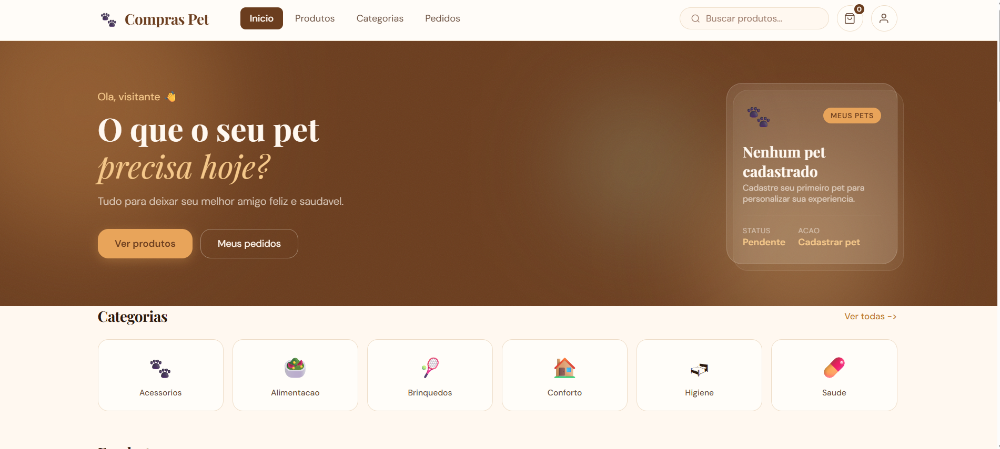
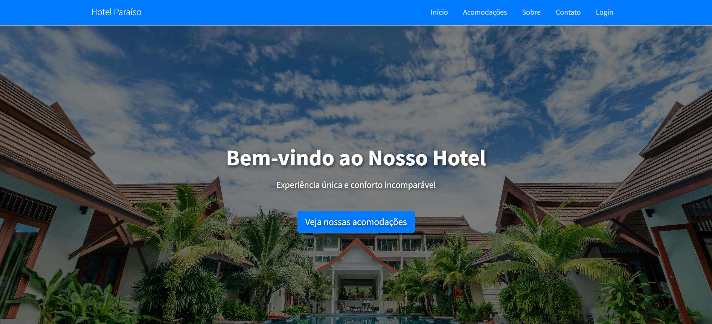
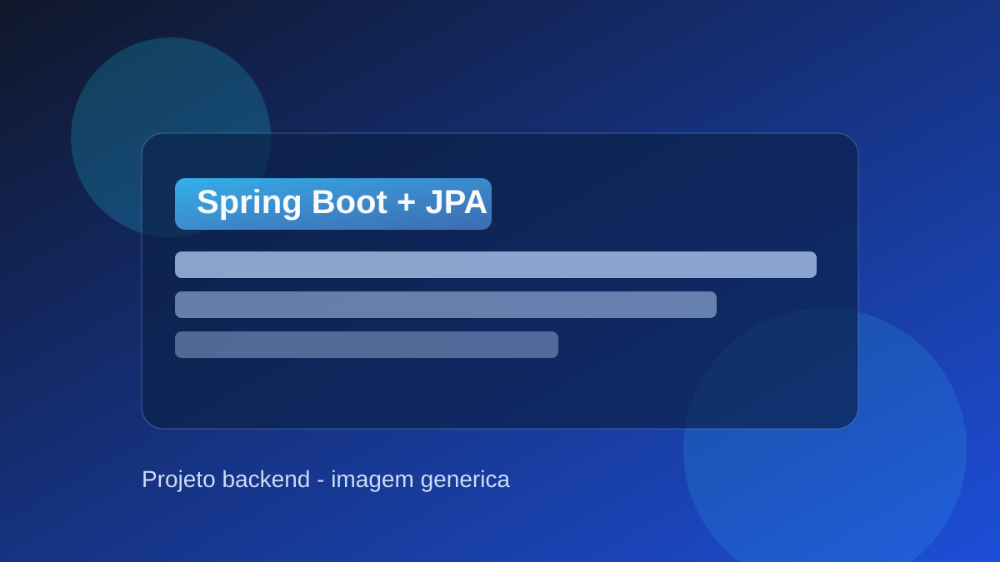
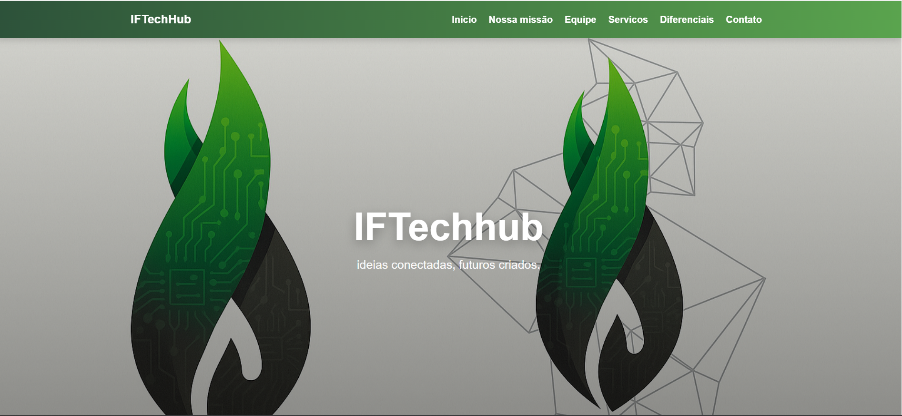

Olá! Me chamo Luís Gustavo.
Sou estudante de ADS no IFSP, com foco em desenvolvimento backend e busca por oportunidade de estágio/júnior para evoluir tecnicamente e contribuir com soluções de software.
Sou estudante de ADS no IFSP, com foco em desenvolvimento backend e busca por oportunidade de estágio/júnior para evoluir tecnicamente e contribuir com soluções de software.
Sobre
Estudante de Análise e Desenvolvimento de Sistemas no IFSP, com foco em desenvolvimento backend. Tenho experiência prática em projetos com Java, Spring Boot, PHP, MySQL e modelagem de banco de dados SQL. Desenvolvo aplicações web, APIs REST e sistemas com integração entre front-end, backend e banco de dados. Busco oportunidade de estágio ou posição júnior para evoluir tecnicamente e contribuir com soluções de software.
Perfil
Análise e Desenvolvimento de Sistemas (ADS) - IFSP
Formação superior em andamento, com foco em fundamentos de engenharia de software, desenvolvimento web e banco de dados.
Atuar como desenvolvedor em posição de estágio/júnior, contribuindo com implementação de APIs, manutenção de sistemas e evolução contínua do produto.
Skills
Tecnologias aplicadas em projetos acadêmicos e práticos para consolidar base técnica de backend.
Projetos
Cada projeto mostra stack utilizada, meu papel e as principais entregas técnicas.

E-commerce Pet
Aplicação web de e-commerce pet com backend Spring Boot (API REST + JWT) e frontend estático em HTML, CSS e JavaScript.
Ver no GitHub
Sistema Web
Sistema web para gestão básica de hotel, com cadastro de usuários, login/autenticação, navegação entre páginas e estrutura modular integrada a banco de dados SQL.
Ver no GitHub
Spring Boot + JPA
API REST desenvolvida com Spring Boot e JPA/Hibernate, com foco em modelagem de entidades, camada de serviços/repositórios e operações CRUD em banco relacional.
Ver no GitHub
Projeto de Extensao
Projeto de extensão da faculdade para criação de startup em grupo, com desenvolvimento de site institucional, definição de serviços e colaboração em equipe (atuação como Scrum Master).
Ver projeto onlineContato
Disponível para processos seletivos e entrevistas técnicas. Posso contribuir com desenvolvimento backend e evolução contínua de aplicações.